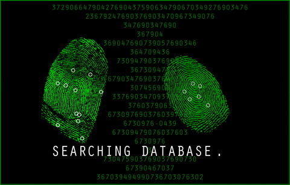

What I Am Doing
Did you know? the only way to learn a new language is by writting programs in it ~Dennis Ritchie~
Hello!
What i am currently Doing, I recently graduated with my Associates in Science and im pursing my Bachelor's at San Jose State University at the given moment, but i have taken some time off while still Pursuing my Bachelor's To understand and Defluster the Reality of Coding.
But I Still Consider My Self As An Inspired Softwaer Engineer Always Ready To Learn Everything Haha! And Push My Self Beyond And Surpassing My Limit
I Love To Look For The Hardest Problems To Solve Where I Can Develop The Most, Deeming Every Obstacle Ahead Of Me And Overcoming Them. I Seek New Opportunities To Develop My Skills Further And Grow Professionally
I Take My Time To Learn New Frameworks, Take On New Projects, Utilize Databases, Build Websites And Build Scripts Specializing In The Reconstruction Of Algorithm Data Structures, Designing, Deploying, And Debugging Development Projects, With A Constituent Of Automation. I Am Inspired To Take On New Projects.
What Languages Do I Know?, Currently Learning? and Have Mastered?

To begin with i would love to say that when i started out coding i started off with the fundamentals of C++, but then i later changed the langauge, because i didn't see me progressing anywhere with it but this, does not limit my knowledge in C++ do not be fooled HaHa!
At the Given moment the Languages which i have mastered and gotten my fingers around them should be Python,Javascript,CSS,HTML,SQL,Bash
The other Programming languages which i may know little of and still getting my fingers around them should be TypeScript,PHP,C# and GO maybe Ruby on Rails
But Just because i named a Few on here doesn't mean i don't know other's it's just very hard to write all programming languages you need to know. The smartest and wisest way is prior to a given project as a Software Engineer you should be willingly able to learn a new language prior to new softwares.
What Frameworks Do I know or Am I Learning?
Well to Start off with, the Frameworks which i know and compose of would be related to Python and Js Frameworks such as; Django,Flask,React and the Django Stack
And other Frameworks which i'm working on continously should be the MEAN Stack, Express.js Angular Js, MongoDb and Node.js and Vue.js and The LAMP Stack, Linux, Apache, MySQL and PHP, and .Net/ASP.NET
What Databases Do I Know or Am i Learning?
The databases which i know of and usually engage with and have a mastery of it around my fingers would surely be MYSQL,and NoSQL and Object-orineted database
While those i'm still to learn and understand should be NoSQL even though i have a leverage on it, there are still somethings and alot of things that i can learn off of.
Then of course we have things like Cloud and Version Control and Containers and API
To begin with the Clouds which i have worked with in particular and understand should probably be AWS,AZURE,Cloud computing and Google cloud storages Even though there are other Cloud Storages out there i am still actively seeking and learning and researching new cloud storages i need to get ahead of prior my next task
This one is prior to Version control the version control which i have my hands wrapped around should probaly be Git, even though version control goes very indepth in multiples scenarios. I have a deep understanding using Git, but i am still always looking for new possible ways to improve that and learn new version controls such as;Local Version Control Systems,Centralized Version Control Systems,Distributed Version Control Systems
Last But not Least, API, i do have a deep understanding in Utilizing API, Reducing the number of API requests, Constructing and Configuring API's too. The most understandable API which i have a deep knowledge with should Be The REST API for sure. Even though API goes in a variety of range such as RPC, And Soap, these are some other Type of API i am willing to take on while learning.
Thank You for taking a look at my blog page!. I will try my best to always keep this page updated.